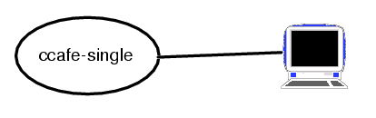
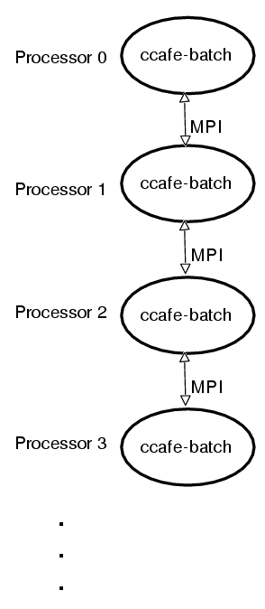
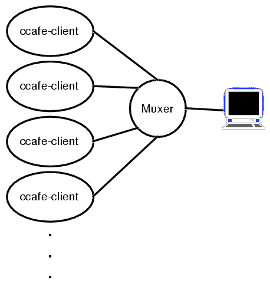
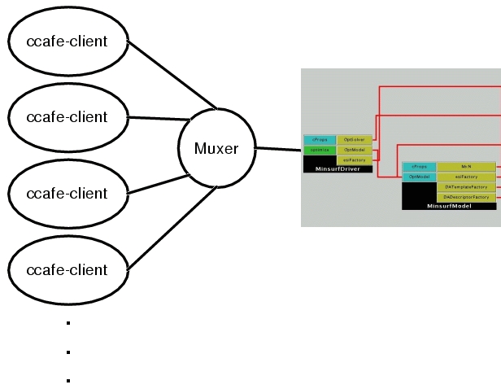

Ccaffeine User Manual
Now that you have built Ccaffeine it would probably be nice to know
how to run it. The Ccaffeine executable orchestrates a set of SCMD
components on a parallel machine. It has the ability to instantiate,
connect and run components interactively or in batch mode. Additionally,
it has debug mode that runs as a sigle processor serial program. Ccaffeine
itself has no ability to spawn processes and relies on MPI or PVM to do
this task for it. For more information see the Ccaffeine paper.
The rest of this document assumes a rudimentary understanding of the
CCA component connection mechanisms and procedures.
The the ccaffeine executable comes in three distinct forms:
- ccafe-client - client version that expects to connect to a
multiplexer front end which can then be connected to the Ccaffeine GUI
or a plain old command line for interactive work.
- ccafe-batch - a batch version that has no need of a front
end and has no ability to be interactive.
- ccafe-single - a single process interactive version useful
for debugging.
These executables are closely related and are intended to be useful
in different modes of component-oriented software development (
see below
).
1. ccafe-single
This executable is meant to be run in sigle processor mode interactively
with the command line.

Options for ccafe-single:
ccafe-single [--ccafe-rc <rc file>] [--help]
--ccafe-rc <rc file>
Source the given file into ccaffeine.
--help
Print out help information.
2. ccafe-batch
This executable is meant to run in a parallel environment, but does
not have an interactive capability, nor the cumbersome multiplexing machinery
that interaction requires. Since there is no way for the user to
interactively create a component program, ccafe-batch requires
either a command line --ccafe-rc option for a Ccaffiene resource
file, a ~/.ccaferc, or a CCAFE_RC_FILE environment variableto perform parallel
computations (see below
).

Options for ccafe-batch:
ccafe-batch [--ccafe-rc <rc file>] [--help]
--ccafe-rc <rc file>
Source the given file into ccaffeine.
--help
Print out help information.
3. ccafe-client
This is the application for interactive use in a parallel environment.
A copy of cafe-client runs on each participating processor, orchestrating
and managing component creation, connections, and destruction on behalf
of the user. A central multiplexor, called the Muxer, creates
a single multiplexed communication stream out of the many cafe-client
streams. The multiplexed stream communicates with the user through
a GUI, or directly to a terminal. In order to preserve scalability,
the Muxer 's are self-similar and can be cascaded in a tree.

Options for ccafe-client:
ccafe-client [--type <client,interactive,gui,oneProcInteractive>]
[--ccafe-waitForGdbAttach] [--port] [--ccafe-rc <rc
file>] [--help]
--type
More below:
--type client
This is the "normal" position,
it listens for a
connection, probably the GUI.
The backend right
now, always behaves as a client.
--type interactive
Same as client but interacts in
human readable form,
rather than the way the GUI would
be expecting to
interact.
--type gui
default behavior, expecting
to talk to a GUI.
--type oneProcInteractive
Expects that there will be
only one
process and that it will
be talking to a human
being.
--port <number>
Port number to listen on,
default host name is localhost.
--name <host>
Host other than localhost
to connect to.
--file <configFile>
A processor config file for
the processor map,
not an initialization file.
--ccafe-waitForGdbAttach
Spins until gdb attaches
for debugging, probably not useful in
a parallel environment; every
process would have to
be attached simultaneously.
--ccafe-rc <rc file>
Source the given file into ccaffeine.
--ccafe-outputdir <directory>
Ccaffeine creates files that are tied
off to each process's
stdout and stderr. This flag
causes those files to appear in the
specified directory.
--help
This message. \n
Run modes vs Ccaffeine executables chart:
|
ccafe-single
|
ccafe-batch
|
ccafe-client5
|
Parallel
|
N
|
Y
|
Y
|
GUI
|
N
|
N
|
Y1
|
interactive command line
|
Y
|
N3
|
Y2
|
debug (gdb attach)6
|
N
|
N
|
Y
|
mpi-based components
|
N
|
Y4
|
Y4
|
footnotes:
- java muxer and builder gui req'd if used in parallel.
- java muxer and terminal window req'd if used in parallel.
- Runs if "mpirun -np 1" otherwise interactive commands would go only
to lead node and things eventually hang when some collective operation is
attempted
- Yes if mpi support configured into ccaffeine.
- ccafe-client has a plethora of switches, documented elsewhere, to
control how it contacts a gui or a multiplexer
- If run with appropriate switch (--ccafe-gdbWaitForAttach )
and gdb configured in during build, gdbWaitForAttach() occurs during startup.
A Ccaffeine resource file consists of a valid set of
Ccaffeine commands
and is loaded and run before interactive input begins. The Ccaffeine
resource file is found and used in the following order of precedence for all
of executables:
- --ccafe-rc option
- CCAFE_RC_FILE environment variable
- $HOME/.ccaferc
- $prefix/cxx/dc/user_iface/CcaffeineRC where $prefix is the value
by the same name given to configure.
ccafe-single and ccafe-client if still not finding an rc file,
bravely continue, waiting for the interactive input, ccafe-batch
on the other hand, will exit.
In order to prevent unintended use of non-Ccaffeine files, a valid Ccaffeine
resource file must have a "magic number" at the top of it to be valid. You
should include the first two lines of this example
file
at the top of any rc file you wish to create for yourself. If these
magic two lines are not present, the file will not be read by Ccaffeine and
it will complain on start up. If the file $CCAFE_ROOT/cxx/dc/user_iface/CcaffeineRC
is used as a resource file (directly from the Ccaffeine build), the components
that come with Ccaffeine will be loaded automatically whenever Ccaffeine is
started.
All executables, if given an invalid resource file, continue searching
in the next possible rc file location, and issuing a warning about the bad
file. If any rc file is subsequently found, another warning is issued that
the rc file found is not the one expected.
Ccaffeine Commands
At the command line Ccafeine is pretty much self documenting. Running
ccafe-single at the command line and typing "help<CR>" gives:
help --
arguments: [string token]
prints the help of one or all commands
exit --
x --
bye --
quit --
arguments: [string token]
leave the parser and the calling program, with optional return code.
display --
arguments: <string token> [instance]
display pallet
- show what is in the pallet currently.
display arena
- show what is in the arena currently.
display component <component instance name>
- show the ports and class name associated with a component
display chain <component instance name>
- show the connections associated with a particular
display state
- equivalent to "display arena" and then "display chain"
pulldown --
instantiate --
create --
arguments: <class> [string token]
create an arena instance from a class.
connect --
arguments: <instance> <string token> <instance> <string token>
<using instance> <used Port name> <providing instance> <provided Port name>
- make a connection between two instantiated components
residing in the arena.
disconnect --
arguments: <instance> <string token> <instance> <string token>
<using instance> <used Port name> <providing instance> <provided Port name>
- break a connection between two instantiated components
residing in the arena.
configure --
parameters --
arguments: <instance> <string token> <string token> [string token] [0 or args like previous]
query or set the configuration parameters of a component port
go --
run --
arguments: [instance] [string token]
cause the connection framework to run the framed components.
pallet --
classes --
show what component classes are in the pallet currently.
arena --
instances --
show what instances are in the arena currently.
links --
chain --
show what connections are in the arena currently.
property --
arguments: <instance> [string token] [remainder of line as a single string]
property <component-instance-name>
- show all the properties of a component.
property <component-instance-name> <key>
- show all the named property of a component, if it exists.
property <component-instance-name> <key> <value>
- set the named property of a component.
remove --
arguments: [instance]
remove <component instance name>
nuke --
arguments: <string token>
remove all components in the arena
repository --
arguments: <string token> [string token]
repository list
- show components available in the repository.
The following get options cannot be abbreviated:
repository get class
- load component from the repository list (private and immediate linking).
repository get-global class
- load component from the repository list (global and immediate linking). repository get-lazy class
- load component from the repository list (private and lazy linking).
repository get-lazy-global class
- load component from the repository list (global and lazy linking).
Global linking may be appropriate for components that, as a side effect,
for example include libblas, liblapack, libppm, and other legacy C/f77 routines.Such components will need to be loaded before any other components that use the
global symbols.
path --
arguments: [string token] [string token]
path init
- set framework path from env(CCA_COMPONENT_PATH).
path append <directory>
- add directory to path.
path prepend <directory>
- insert directory before path.
path set
- replace path. format input as env()
path
- show path
shell --
system --
arguments: [remainder of line as a single string]
executes shell commands (no globbing, though)
Configuration Files and File Confusion
There are 3 different files that Ccaffeine uses for configuration, beyond
other files that might be associated with any components that get instantiated.
In addition to these, ccafe-client creates files associated with the
stdout/stderr of each process (these are usually named pErr xx
and pOutxx, where xx is the MPI rank of the process )
. It is easy to confuse them and usually disasterous to program execution
if they are mixed up. Only one file type is associated with ccafe-batch
and ccafe-single: the Ccaffeine resource
file
. For ccafe-batch there are three configuration files:
- Ccaffeine resource file.
- A runtime configuration file indicated by the --file option.
- A ".bld" file that is read by the Ccaffeine
GUI
.
Of these the most similar and the easiest to confuse are the ".bld" file
and the Ccaffeine resource file. The ".bld" file is a format only
for the GUI
front end and is only read and parsed only by the GUI. Ccaffeine
proper (i.e. ccafe-client) will get confused by it and probably hang. The
".bld" file can both be read and written by the
GUI
. It can also be carefully edited by the user, usually with reasonable
results. The Ccaffeine resource file
is never written by Ccaffeine and is only constructed by the user from
the valid list of Ccaffeine commands
.
Ccaffeine GUI
The Ccaffeine GUI takes the place of a user typing at a command line terminal.
It interprets gestures in the window and translates them into commands
to be typed out on a socket that is connected to the Muxer
, which in turn sends them to the ccafe-client's. The GUI
always assumes that it is talking to a single Ccaffeine client and requires
the Muxer
to communicate in to a parallel run. Obviously the GUI can only
be used in an interactive fashion and does not work with ccafe-batch
or ccafe-single. It will function normally with a single processor
run of ccafe-client.

The GUI is written in Java and can take many forms. The standard path
from the console is
java -classpath $CCAFE_ROOT/java gov.sandia.ccaffeine.dc.user_iface.BuilderClient
The available options are:
--builderPort <port number>
Port on which GUI will connect, default is 2024.
--host <hostName>
Host to which GUI will connect, default is localhost.
--file <.bld file>
GUI compatible .bld file to be read in at startup.
The GUI ".bld" files are a format that is written by the GUI and is not compatible
with the Ccaffeine rc file type.
Ccaffeine Muxer
This is an application, written in Java, that multiplexes streams between
multiple parallel process and a single entity. In practice that
entity is either telnet for command line interaction or the Ccaffeine
GUI for a graphical user interface. The standard execution path from
the Ccaffeine build is:
java -classpath $CCAFE_ROOT/java gov.sandia.ccaffeine.dc.distributed.MuxingProcess
The common options are:
--file procDefinitionFile (required)
A processor definition file that associates names with machine
and processor locations of the layout for this parallel run.
--name MyName (required)
The name for this server appearing in the processor definition file.
--builderPort port
The port to listen on for a connection from the single process
expecting multiplexed IO.
--port port
The port to listen on for multiple connections from the parallel
processes.
Ccaffeine Scripts
There are two shell scripts that hopefully make it easy to run Ccaffeine
as a beginner: runParallelLocal and runGUI. Both are
located in $CCAFE_ROOT/bin and run from the Ccaffeine build.
runParallelLocal has these options:
--np number of processes requested from MPI.
--kill wipe out the Ccaffeine parallel backend
run previously.
--help this message.
ccaffeine options any valid combination of ccafe-client options
With no options runParallelLocal will execute three MPI processes
of ccafe-client and connect them to a Muxer ready for a command line connection
(telnet) or a connection from the Ccaffeine GUI.
runGUI has no extra options but takes all of the
options
available to the Ccaffeine GUI.
Tips
- Do not use relative paths for any of the file arguments, use only absolute
paths. These are parallel runs and MPI does its best, but sometimes
paths get confused.
- Unless you are sure you know what your doing do not use the --file
argument for ccafe-client.
- Make sure that your MPI installation is working and your rsh is configured
such that "rsh localhost ls" works without an error.
- It is always best to preface any parallel run with a "runParallelLocal
--kill" to get rid of any stray processes that may be laying around. If
there are complaints about "connection refused" or "port unavailable" resort
to this command. Also: unless you are already running something, it
can't hurt.
- Not all combinations of GUI and Ccaffeine options are compatible, but
the default ones are.
- Use the help line
.
Examples
Here bold faced type is what the user types. To talk to three ccafe-client
's through the Muxer via a command line:
$ runParallelLocal
starting the muxer ...
done.
$ MPI_Init called in CmdLineClientMain.cxx
MPI_Init called in CmdLineClientMain.cxx
MPI_Init called in CmdLineClientMain.cxx
$ telnet localhost 2024
Trying 127.0.0.1...
Connected to localhost.localdomain (127.0.0.1).
Escape character is '^]'.
Loaded StarterComponent NOW PRIVATE .
Loaded RevalidateTest NOW PRIVATE .
display pallet
addClass RevalidateTest
addClass StarterComponent
^]
telnet> quit
Connection closed.
$
Note that the escape character for telnet is '^]' after which "quit" at the
prompt terminates the session. Note also that there is some output
informing you that MPI has created 3 processes.
The standard port that the Muxer listens from is 2024 and the telnet
program is just a way to type to a socket. The interface used in this
way is pretty unfriendly because it is expecting the GUI to connect to it.
If you want to use something friendlier try the ccafe-client option
--type interactive which is meant for human beings. It would
be disasterous however to use this option in conjunction with the GUI. To
run the GUI:
$ runParallelLocal --kill; runParallelLocal
starting the muxer ...
done.
$ MPI_Init called in CmdLineClientMain.cxx
MPI_Init called in CmdLineClientMain.cxx
MPI_Init called in CmdLineClientMain.cxx
$ runGUI
< GUI output eliminated >
After this, if the X Windows settings are working, a GUI should appear in
your display. Since it is Java it is pretty slow and may take a while.
Note that runParallelLocal --kill was run to eliminate any stray
processes created in the first run.